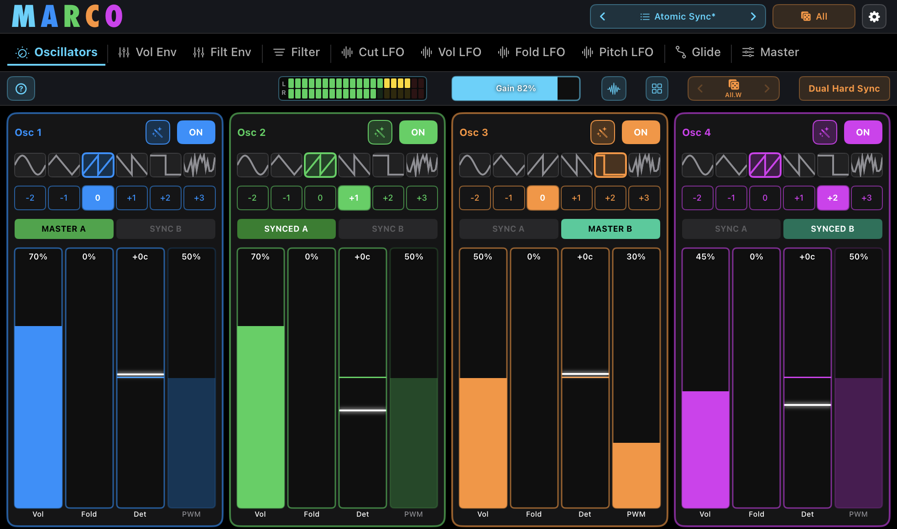
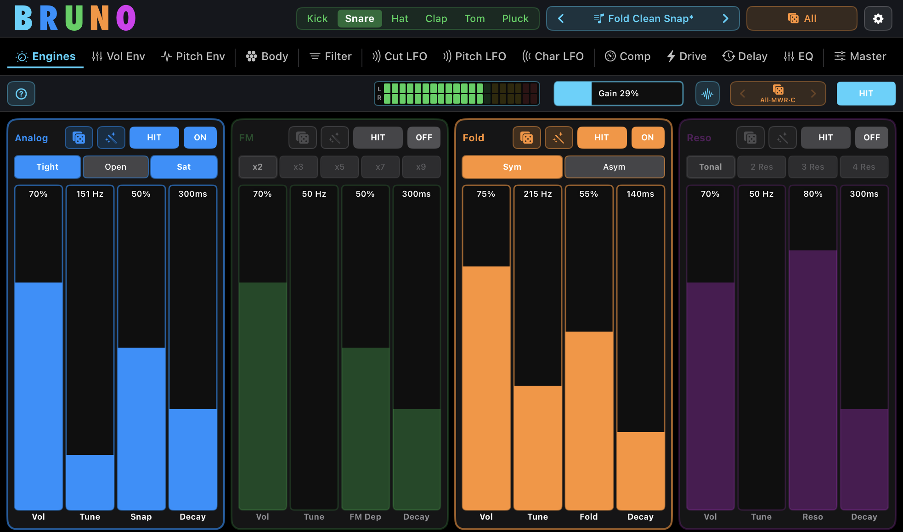

Synthesizer · iPhone, iPad & Mac
MARCO
4-Oscillator Synth with Independent Shaping and Dual Hard Sync
Four fully independent oscillators — each with its own waveform, filter, envelopes and modulation — driving two hard-synced voices. A musical random generator and a Tweak system that's part of the writing — sounds nobody else can make, from a synth anyone can play. Available as a standalone app and an AUv3 plugin.
Explore Marco
Drum & Pluck Synthesizer · iPhone, iPad & Mac
BRUNO
A drum machine that thinks like a synth.
Six voices, four synthesis engines per drum. Stack Analog, FM, Fold and Resonant the way the pros build big drums — for a punchy, mix-ready sound. Roll the dice on any engine, then tweak: a fast, musical workflow that keeps fresh ideas coming. Available as a standalone app and an AUv3 plugin.
Explore Bruno